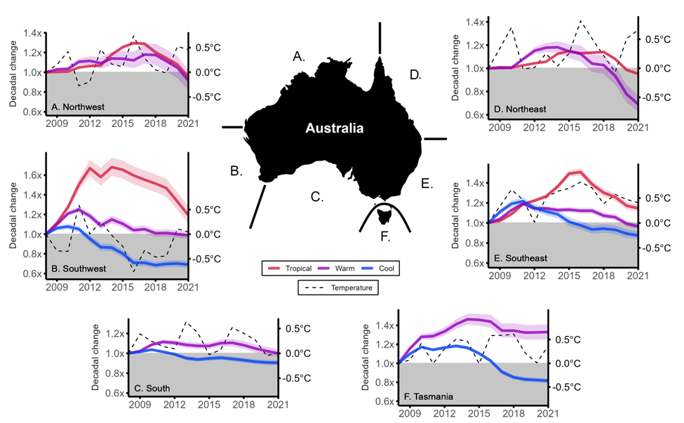
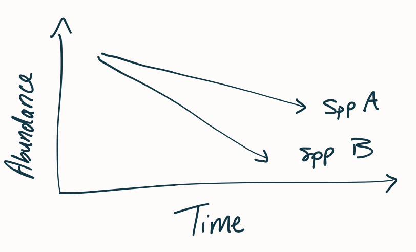
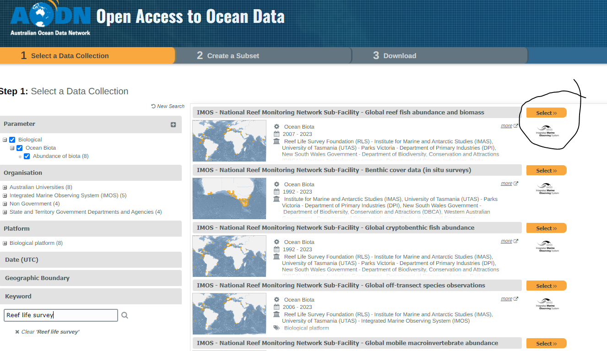
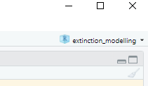
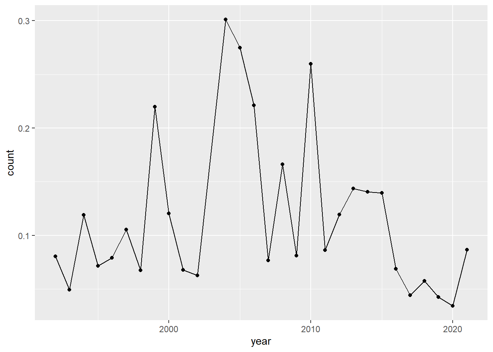
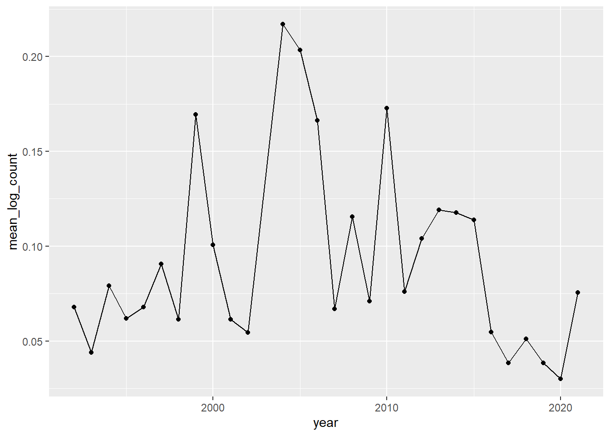
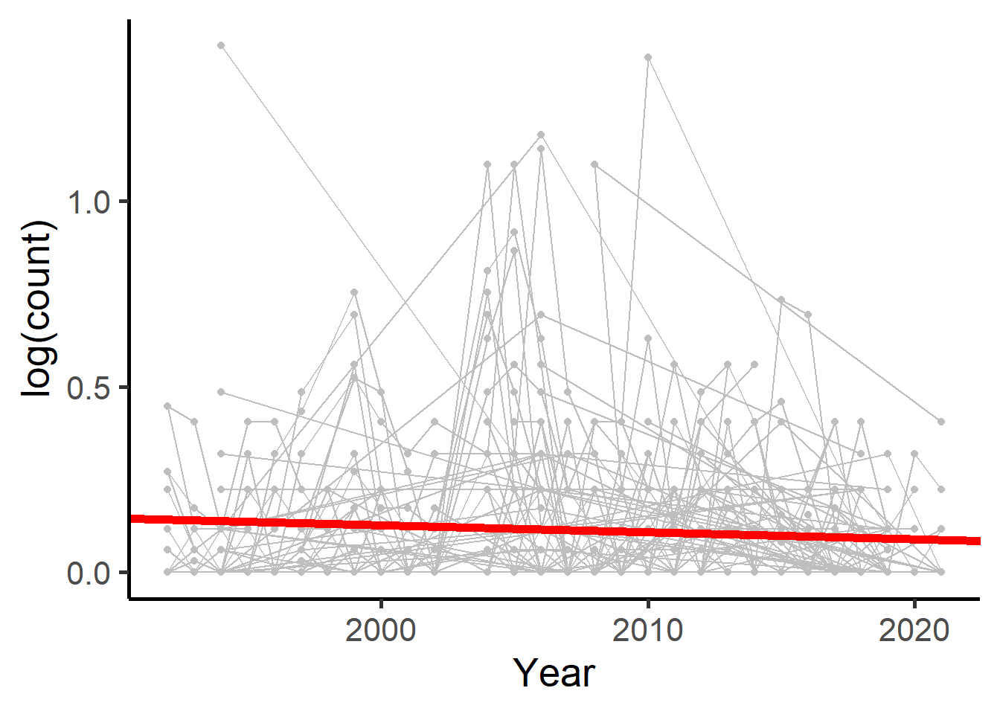

5*(6/9)[1] 3.333333The vulnerability of a species to extinction is dependant upon many life history parameters or other factors, such as:
Focusing on one of these, thermal tolerance, we hypothesise that cooler species are being driven out from regions due to warming waters. Looking at Figure 1, we see that cooler species are generally declining in the southern parts of Australia, whilst warmer species are remaining consistent or increasing (in Tasmania at least).

This leads to the question:
What happens to the cool-affinity species in Tasmania when the waters warm?
1. It starts with an observation or idea:
“Has anyone noticed how we’ve started seeing a heap more warm-affinity fish in our dives around Bicheno?”.
2. Leading into a formal hypothesis or question:
What are the population trends of fish species across Tassie in the past decade, and how is that related to the thermal affinity of the species?
3. Thinking about how we might analyse this:
For a single species, we could look at the abundance of each species over time - this could give us an idea about whether that species is going up, down, or remaining constant.
.jpg)
The rate of decline in abundance over time can give us an idea about how quickly the species is heading to ‘extinction’ (Figure 3).

Edgar et al (Accepted, 2023) looked at the species trends for 1057 species. In this practical we will look at a random selection of 20 of those species. The steps we will follow are:
Try and get as much information about the species as possible. Sources include:
We will split into pairs. Each pair will try to get as much life-history information as possible. Input your data into the Google Doc here.

Download R (https://cran.r-project.org/)
Download R-Studio (https://posit.co/downloads/)
Set-up a new project
Read in data
Fit a linear model of abundance as a function of time.
TLDR; work in projects, your life will be easier.
You can think of projects as a folder (aka. working directory) where you would keep all your input data, output figures, output summary data etc.
Working in projects makes your coding life much easier. R knows where to look for things, R knows where to output things, and everything is organised…you will thank yourself later.
Steps:
Locate or create a file in your documents where you want to put all your R projects. For example I keep mine in “Documents/Work/R_projects/”.
Open R studio
Create a new project, call it something useful, e.g. “ksm718_extinction_prac” or “ksm718_prac2”, avoid using spaces or capitals, instead use “_”.
Note: When you open up the project in the future, just click on the .Rproj file, this will make sure you are actually working in that project. You can see which project you’re working in at the top right of your Rstudio. See Figure 5.

TLDR; work in scripts, not in the console.
You can code directly into the console, and it will work, but it won’t keep track of all your code. Sometimes I code directly into the console if I just want a quick answer for something, e.g.
5*(6/9)[1] 3.333333When you write in scripts, you can “send” that code to the console to run, and you can save the script and come back to it later. Not only is that important when working on big R projects, but its important when you come to publishing your code when you publish a paper.
To begin, write something in the R script, maybe start with a comment (use “#” to signifiy a comment - R will ignore any text after a hashtag), then save the R file.
# R script to analyse trends of species abundanceFrom Edgar et al (Accepted, 2023), I have randomly selected 20 Tasmanian species. I have called this file is called “count_data_20spp.csv”.
Create a new folder in the project directory, you can either do that in R studio or you can actually locate the folder on your computer and create a new folder there. I am going to call this folder “data” (you could call it anything that makes sense to you and your organisation, maybe you want to call it “input” or “raw_data”). Basically this is to organise your files and keep all your data together.
Here we are only using a single data file, but it may be the case you have hundreds or thousands, and that’s where this organisation will benefit you heaps.
Because we are working in projects, R already knows where to look (the location of the .Rproj file).
First step is putting the raw data into the folder we just created (“data” or “input” or whatever you called it).
Now lets read in the data…
R likes comma separated value files (.csv), it does not like .xlsx files there’s heaps of extra information that Excel uses and that R does not care about (e.g. colours of excel cells etc.). R just wants the raw data, nothing else.
The first thing to normally do with a new script is to load the tidyverse package. This package is actually a collection of packages, and is just a lot of code that has been developed to make coding in R much more friendly. It is the new approach to coding in R and its much better to learn ‘the tidyverse way’. People talk about “Base R” vs “the Tidyvese”, you will ultimately learn both. But start with the tidyverse.
# If you have not installed the tidyverse on your computer before, uncomment the line below and install it. You only need to do that once. You can remove it from your script after you've done that.
# install.packages("tidyverse")
# once installed we can load the package
# we need to do this every time we use any tidyverse code, so leave that line at the top of your scripts
library(tidyverse)Now we can read in the csv file using the tidyverse function called read_csv().
# because I put the raw data into a folder called "data" I need to tell R to look in that folder for the file.
read_csv("data/count_data_20spp.csv")# A tibble: 46,950 x 6
site_code latitude longitude species_name year count
<chr> <dbl> <dbl> <chr> <dbl> <dbl>
1 BI-S1 -41.9 148. Aracana aurita 1992 0
2 BI-S1 -41.9 148. Aracana aurita 1993 0.0312
3 BI-S1 -41.9 148. Aracana aurita 1994 0
4 BI-S1 -41.9 148. Aracana aurita 1995 NA
5 BI-S1 -41.9 148. Aracana aurita 1996 NA
6 BI-S1 -41.9 148. Aracana aurita 1997 0.0312
7 BI-S1 -41.9 148. Aracana aurita 1998 NA
8 BI-S1 -41.9 148. Aracana aurita 1999 0
9 BI-S1 -41.9 148. Aracana aurita 2000 0
10 BI-S1 -41.9 148. Aracana aurita 2001 0
# ... with 46,940 more rowsThis will read the csv file and show it on the screen (thankfully it won’t show us the whole 49K rows), but we want to assign it to an object so that we can use the file and manipulate it, or summarise it, or visualise it.
raw_dat <-
read_csv("data/count_data_20spp.csv")In this dataset, we have zero values, and we have NA values. How we deal with NA values is an important thing to consider in the analysis, were there really zero individuals observed or were they not counted? In this dataset 0 values correspond to if a species has been previously observed at that site, and the site was surveyed and none were spotted, then it is a zero. NA values here correspond to the site not being surveyed in that year.
First lets get rid of the years where the sites were not surveyed (NA values). We go from 49K rows to 14K rows, a lot more friendly.
# Removing rows that have an NA in the count column
dat_no_na <-
raw_dat |>
drop_na(count)First thing before we start analyses, plot the data! Let’s take one species, e.g. Aracana aurita.
# 980 rows
dat_one_spp <-
dat_no_na |>
filter(species_name == "Aracana aurita") |>
mutate(log_count = log(count + 1))There are lots of rows, as each site has its own time-series. How about we look at the time series for each site in a big plot?
dat_one_spp |>
filter(str_detect(site_code, "TI-S|TN")) |> # selecting a few sites only
ggplot() +
aes(x = year,
y = log_count) +
geom_path() +
# seperate the data into a window (facet) for each site_code
facet_wrap(~site_code,
scales = "free_y")
Some time series are only two data points in length, probably not that informative, I would not be confident to say, for example, that the Aracana aurita is increasing at TAS174.
One way to overcome this is to take an average across the sites.
dat_one_spp_mean <-
dat_one_spp |>
group_by(year) |>
summarise(mean_log_count = mean(log_count))
# average across all sites
dat_one_spp_mean |>
ggplot() +
aes(x = year,
y = mean_log_count) +
geom_point() +
geom_path()
What is this species doing? Firstly it seems to be all over the place, but it does seem that in recent years it’s lower. Is this significant? Let’s see
For now, we will convert all zero values to NA values.
lm1 <- lm(mean_log_count ~ year, data = dat_one_spp_mean)
summary(lm1)
Call:
lm(formula = mean_log_count ~ year, data = dat_one_spp_mean)
Residuals:
Min 1Q Median 3Q Max
-0.05612 -0.03559 -0.01990 0.02523 0.12288
Coefficients:
Estimate Std. Error t value Pr(>|t|)
(Intercept) 1.0971236 2.1638202 0.507 0.616
year -0.0005005 0.0010783 -0.464 0.646
Residual standard error: 0.05098 on 27 degrees of freedom
Multiple R-squared: 0.007916, Adjusted R-squared: -0.02883
F-statistic: 0.2154 on 1 and 27 DF, p-value: 0.6463No significant slope, i.e. no increase or decline. However, by taking an average of all of the sites, we are removing a lot of data. We could also use a linear mixed effects model to model this time-series.
# This package allows us to get a p-value from the model
# We can talk more about the appropriateness of getting a p-value from a mixed model
library(lmerTest)
lmer1 <- lmerTest::lmer(log_count ~ year + (1|site_code), data = dat_one_spp)
summary(lmer1)Linear mixed model fit by REML. t-tests use Satterthwaite's method [
lmerModLmerTest]
Formula: log_count ~ year + (1 | site_code)
Data: dat_one_spp
REML criterion at convergence: -787.6
Scaled residuals:
Min 1Q Median 3Q Max
-2.6443 -0.4597 -0.2005 0.2015 6.6786
Random effects:
Groups Name Variance Std.Dev.
site_code (Intercept) 0.01148 0.1072
Residual 0.02205 0.1485
Number of obs: 980, groups: site_code, 98
Fixed effects:
Estimate Std. Error df t value Pr(>|t|)
(Intercept) 3.878e+00 1.197e+00 9.007e+02 3.241 0.00124 **
year -1.876e-03 5.959e-04 9.001e+02 -3.147 0.00170 **
---
Signif. codes: 0 '***' 0.001 '**' 0.01 '*' 0.05 '.' 0.1 ' ' 1
Correlation of Fixed Effects:
(Intr)
year -1.000By including all the data, we have a significant decline in the count of the species.
# Extracting the slope and intercept from the lmer
intercept_value <- coef(summary(lmer1))[1, 1]
slope_value <- coef(summary(lmer1))[2, 1]
dat_one_spp |>
ggplot(aes(x = year,
y = log_count)) +
geom_point(col = "grey") +
geom_line(aes(group = site_code),
col = "grey") +
geom_abline(intercept = intercept_value,
slope = slope_value,
size = 2,
col = "red") +
theme_classic(20) +
labs(
x = "Year",
y = "log(count)"
)
Why does the linear model slope differ from the linear mixed model slope?
What are some immediate thoughts when you visualised the data?
Is the result unexpected?
What does the intercept value represent in the models?
What does the slope value represent (in words)?
Do you trust the result?
What other modelling approaches could we do?
Can we extrapolate from this linear model into the future?
Is removing the NA values appropriate?
Is removing the zero values appropriate?
Freddie Heather, Demonstrator |
freddie.heather@utas.edu.au | |
Tyson Bessell, Demonstrator |
tyson.bessell@utas.edu.au | |
| Mary-Anne Lea, Unit coordinator + Demonstrator |
MaryAnne.Lea@utas.edu.au |
*Any typos or errors in this document; email freddie.heather@utas.edu.au